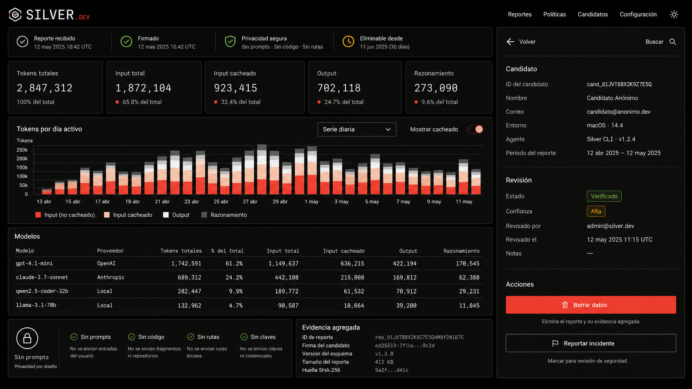

Mercado Libre BI
Meli Core Dumper
De datos de ventas y publicaciones a una plataforma de inteligencia para detectar patrones, anomalias y oportunidades operativas.
Portfolio tecnico para problemas reales
Integro APIs, scraping y dashboards para convertir datos de Mercado Libre, proveedores y operaciones en productos listos para usar.
Los proyectos nacen donde la informacion esta repartida entre Mercado Libre, planillas, HTML de proveedores y procesos manuales.
Ingestion, limpieza, UI, deploy, documentacion y checks de calidad en un flujo usable.
Menos friccion para decidir, monitorear stock, analizar publicaciones y compartir informacion.
Case studies con contexto
De datos de ventas y publicaciones a una plataforma de inteligencia para detectar patrones, anomalias y oportunidades operativas.
Unifica proveedores, planillas y datos web en una pagina estatica facil de consultar.

Un flujo armado rapido para capturar datos sensibles de candidatos sin friccion innecesaria.
Centraliza senales de publicaciones para ver que cambia, que duele y donde actuar primero.